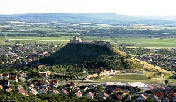
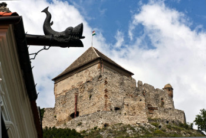
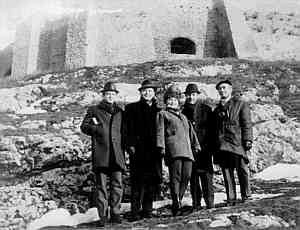
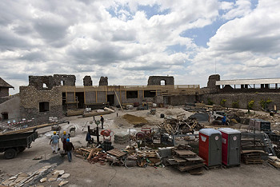
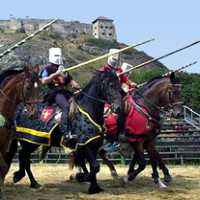
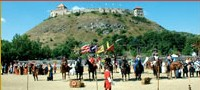

|
|
|
 |
Sümeg
ist eine Gemeinde mit 6.850 Einwohnern nördlich vom
Keszthelygebirge am Westbalaton.
In
Sümeg steht hoch,
weit aus der Ferne unübersehbar und malerisch, die
größte und
am besten erhaltene Burgruine der Gegend. Mit
der Burgbefestigung begann man
gleich nach dem Tatareneinfall etwa ab 1260 auf direkte Anweisung aus dem
Könighaus der Árpáden. |
Zu Beginn bestand die Burg lediglich aus dem heutigen
alten Turm, der Zisterne und aus einigen anderen
Räumlichkeiten. Als Burg wurde die Befestigung erstmalig im
Jahre 1301 erwähnt. Im 15. Jahrhundert haben große
Bauarbeiten in der Burg von Sümeg auf Geheiss der Veszpremer
Bischöfe Matyas von Gathaloczy und Albert von Vetesi
stattgefunden.
Kurz nach dem Türkeneinfall im Jahre 1552 wurde
der Bischofssitz aus Veszprém
in die Burg von Sümeg verlegt bzw. gerettet und hier
überlebte der
Klerus die Zeit bis zur Befreiung Ungarns im Jahre 1686.
Die Burg wurde von den
Türken vielfach belagert, konnte aber von den Osmanen nie
erobert werden. So
konnte die Franziskanerkirche und Kloster während der
türkischen Besetzungszeit im Jahre 1653 fertiggestellt werden. Es ließ sich
jedoch nicht vermeiden, dass die Türken die Bevölkerung am
Fuße der Burg in mehreren Rachezügen dezimierten. |
|
 |
Im
15.-16. Jahrhundert gegen die
Türken stark ausgebaut spielte die Festung eine wichtige Rolle
auch im Kurutzenaufstand von Rákóczi. Obwohl die Burg nach
dem Friedensbeschluß den Österreichern kampflos und
einigermaßen heil übergeben
wurde, zerstörten die Habsburger die
Befestigungsanlagen im Jahre 1713. |
Kurz danach begann die während der
türkischen Besatzungszeit stark dezimierte
Bevölkerung mit dem Wiederaufbau der Gemeinde Sümeg. Der
Bischofspalast von Bischof
Márton Padányi-Bíró wurde
zwischen 1748 und 1755, die
römisch-katholische Pfarrkirche im Jahre 1757 im Barockstil
gebaut. Letztere sind mit den berühmten Fresken des
österreichischen Malers Anton Maulbertsch prachtvoll ausgemahlt; man sagt,
es sei sein schönstes Werk. Das barocke Hertelendy-Herrenhaus ist aus dem 18. Jahrhundert.
|
Touristik:
Die
heute restaurierte Burgruine von Sümeg ist seit eh und je einen Besuch wert.
Erinnerungsfoto rechts: Januar 1967.
Aus der Burg sieht
man bei schönem Wetter bis nach Graz in
Österreich. In der
Burg kann die Ausstellung zur
Festungsgeschichte besichtigt werden.
Unterhalb
der Burg befinden sich einige
gastronomische
Betriebe
und ein Waffen- und Kutschenmuseum. |

|
Anfang
der 1970er Jahre bereits restauriert, wurden die Ruinen
nun schon seit zwei Jahrzehnten erneut renoviert. Intensiv
gearbeitet war jedoch erst seit 2009 mit EU-Geldern, wozuauch
die Gemeinde etwas
vorstrecken musste.
Türme wurden erneuert, Basteien,
Burgkapelle und
Dachkonstruktion wurden befestigt.
Insgesamt wurden rd. 3 Millionen Euro in die
Renovierungsarbeiten investiert und sie sind nun abgeschlossen. Heute ist die
Burg mit den Ritterspielen eine Touristen-Attraktion. |
 |
|
Im Turm
finden Sie eine kleine Ausstellung zur Burggeschichte. Dort
zeigt man auch Ausgrabungsfunde aus der Bronze- und der
Römerzeit. Denn in Sümeg grub man einen frühgeschichtlichen
Friedhof sowie eine frühchristliche Basilika aus. Der Ort
Sümeg liegt unterhalb des Burgberges. Er hat noch ganz den
Charakter eines vornehmen Landstädtchens.
Der Hauptplatz wird von herrschaftlichen Häusern aus der
zweiten Hälfte des 18. Jahrhunderts gesäumt. Hier steht das
Geburts- und Wohnhaus des Balaton- Dichters Sandor Kisfaludy,
das heute ein Museum ist. Montags ist das Museum
geschlossen. Im
Geburtshaus des
Erzählers Sándor Kisfaludy (1772 bis 1844) zeigt man auch Arbeiten
von Sandors Bruder Karoly (der Autor zahlreicher
Theaterstücke und Lustspiele war).
In
der Vak Bottyán utca stehen noch heute Deckhengste aller in
Ungarn gezüchteter Rassen in barocken Stallungen. In einem
kleinen Museum zeigt man ihnen schöne ungarische
Kutschengeschirre, Sättel und Zaumzeug.
|
Verlockend ist das
mittelalterliche Festmahl im Rittersaal, am Fuße der
Bergkuppe, wofür der Tourist bis
zu zwei Stunden
opfern
sollte für die Besichtugung des angebauten
landwirtschaftlichen Betriebes samt
Stallungen. Da
wird auch Reiten
angeboten.
|
|
 |
Je
nach Jahreszeit finden die Burgfestspiele mehr oder weniger
häufig statt, im Hochsommer bis zu 4 Tage lang in der Woche. Dabei
werden
mittelalterliche Sitten in Erinnerung gebracht. |
 |
|
| |
Ungarn-Tourist Team

|
| |
| |
|